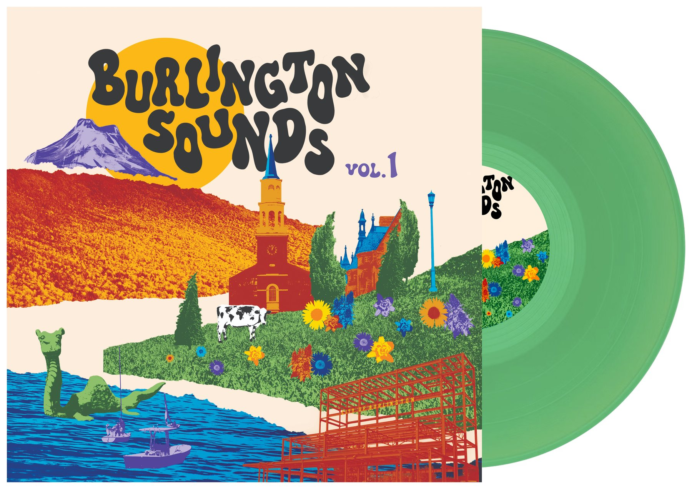
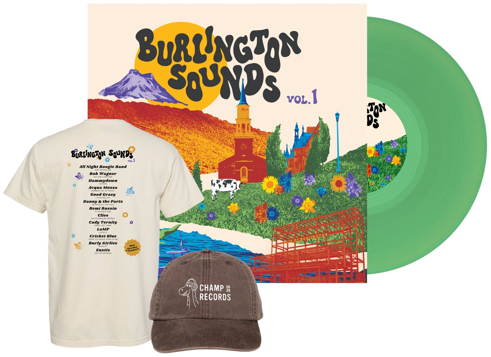

Burlington Sounds, vol. 1
Discover fourteen artists from Burlington's thriving music scene, all on one vinyl record.
- 100% of profits go to the musicians
- One-time limited pressing
14 Tracks · 12" Vinyl · $25
Pre-order the RecordEstimated shipping November 2026.
Meet the bands
-
All Night Boogie Band
“Keep On Rolling”
All Night Boogie Band is a groovy rock-and-roll band that will have you dancing, well…all night! Formed in Burlington through impromptu blues jams, the band blends soaring vocals, deep blues riffs, rollicking piano, blazing horns, and a rock-solid rhythm section into an electrifying live show. Hundreds of performances later, they’re still carrying the torch for classic rhythm & blues in Burlington.
-
Bob Wagner
“Sad and Lonesome”
Bob Wagner is a songwriter and guitarist whose music draws from folk, country, and Americana traditions. A collaborator with musicians such as Mike Gordon and Kat Wright, Bob combines seasoned musicianship with heartfelt songwriting, delivering songs rich in melody, character, and storytelling.
-
Hammydown
“Outside”
Hammydown is the grunge-pop project of Abbie Morin, formed in 2016. Their songs match catchy riffs to introspective musings often about the perpetual metamorphosis of the human experience.
-
Acqua Mossa
“Running Out of Tricks”
Acqua Mossa is a trio born of deep rooted relationships and a hunger for the unconventional. The group’s influences are broad ranging; a quality felt in the spectrum of their emotional, synth heavy compositions, intimate and charged storytelling, and groove inspired underbelly.
-
Good Gravy
“I Can Hide You”
Good Gravy is a trio keeping traditional bluegrass and Americana roots music alive and well. Catch them around town singing soulful harmonies, picking blazing hot licks, and telling tales through classic covers and timeless originals.
-
Danny & the Parts
“Getting All the Hugs”
Danny & the Parts is an ever rotating crew of musicians led by Danny LeFrancois, that will spin you out to the dance floor and leave you wanting more with their whimsical telecaster Honky-Tonk Americana Magic.
-
Remi Russin
“In the Backyard”
Remi Russin is a Winooski based multi-instrumentalist and songwriter that combines ambient influences with the melodic sensibilities of dream pop, shoegaze, and post punk to create something entirely its own, evoking a deep sense of longing nostalgia, and reflecting poignantly on loneliness and grief. A longtime fixture of the Burlington, VT music scene, Russin’s work reflects a deep seated DIY ethos.
-
Clive
“Nightcrawlers Reprise”
Clive formed in Burlington after its members met through the University of Vermont and the local music scene. What began as a group of friends tackling challenging progressive rock compositions quickly evolved into one of Burlington’s most adventurous live bands. Inspired by Burlington’s rich jam tradition, Clive continues to push the envelope with inventive songwriting, fearless improvisation, and a relentless dedication to musicianship.
-
Cady Ternity
“When I Get There”
Cady Ternity is a Central Vermont-based three piece. Music is THE BEST.
-
LaMP
“Clipse-O”
Jam-rock organ trio LaMP was born on a magical night at Nectar’s in 2018. The music got so hot it set off the fire alarm, sending a packed dance floor into the frigid Vermont winter. Featuring members of Trey Anastasio Band and Joe Russo’s Almost Dead, LaMP has been fueled by effortless chemistry and deeply infectious grooves ever since.
-
Cricket Blue
“I Hope You Never Think of Me”
Cricket Blue creates indie chamber folk to make you weep into your tomatoes.
-
Burly Girlies
“Mosh Pit”
Burly Girlies will yell in your face, kiss you on the cheek, and gather the fems and thems in the pit. Their mix of vulnerable and fun punk rock will get you riled up in more ways than one. Their songs include themes relating to feminism, anti-capitalism, sapphic love, and grooming. Burly Girlies hopes to inspire, charm, enrage, and make you laugh all at the same time.
-
Eustis
“Ain’t No Revenge”
Eustis is the musical outfit of musician and producer Dan Bishop. Dan’s music reflects on life’s emotional moments in a way that’s relatable, comfortable, and simply put, beautiful.
-
Three Piece Meal
Intro/Outro – “Gunky”
Three Piece Meal is an organ trio bound to get your booty shaking with their smooth, jazzy, and funky sounds. They pay homage to organ trio greats while adding a dash of their own modern flavors to keep things fresh.
-
Kris Brown
Intro/Outro – Voiceover
Kris Brown is a professional voice actor known for his deep voice, versatility, and regional voice-over work. He provides voice-over services for commercials, cartoons, audiobooks, and podcasts. His own podcast ‘Cannasations w/ Kris’ explores the ins-and-outs of Vermont’s cannabis culture/industry with others in the space.
Welcome to Burlington Sounds.
Burlington's music scene runs deep.
There's something special happening in Burlington.
For a small city tucked between the Green Mountains and Lake Champlain, Burlington's music scene punches above its weight. From backyard shows to stages around the world, the musicians coming out of this corner of Vermont have a reach that goes far beyond its borders.
It's a scene where internationally touring musicians share stages with emerging local bands, and where you can catch something incredible on just about any night of the week.
Burlington Sounds was created to capture a little piece of that magic — and help more people discover the musicians behind it.
The Record
Tracklist
Side A
All Night Boogie Band
Keep On Rolling
Bob Wagner
Sad and Lonesome
Hammydown
Outside
Acqua Mossa
Running Out of Tricks
Good Gravy
I Can Hide You
Danny & the Parts
Getting All the Hugs
Side B
Remi Russin
In the Backyard
Clive
Nightcrawlers Reprise
Cady Ternity
When I Get There
LaMP
Clipse-O
Cricket Blue
I Hope You Never Think of Me
Burly Girlies
Mosh Pit
Eustis
Ain't No Revenge
Intro & outro: “Gunky” by Three Piece Meal, with voiceover by Kris Brown.

Burlington Sounds, vol. 1
A little bit of everything.
All Burlington.
From honky-tonk and boogie-woogie to grunge pop, punk rock, bluegrass, soul, and psychedelia, this record captures the remarkable range of music coming out of Vermont's Queen City.
Featuring emerging artists alongside members of Trey Anastasio Band, Mike Gordon Band, and Joe Russo's Almost Dead, Burlington Sounds brings together fourteen artists on one record celebrating the city's extraordinary music scene.
100% of profits go directly to the musicians who made it possible.
Shop Burlington SoundsBurlington Sounds, vol. 1
Find your next favorite band.
Fourteen local artists. One record. A whole lot to discover.
Pre-order the Record — $25